Created创建 Updated最后更新
Optics · 01
Early Theories of Light
1. Early Theories of Light: From Prehistory to the Sixteenth Century
Humanity’s use of, and attempts to understand, light date back to prehistory. People made and improved optical devices while asking what light was and how the eye could see. Theory, experiment, practical experience, and technology became intertwined as these pursuits unfolded. As illustrated in Fig. 1(a), people were already making bronze mirrors some four thousand years ago, polishing metal surfaces to see their own reflections[1].

Ancient writings also preserve observations of shadows, inverted images, and objects in water:
- Pinhole imaging. The Mozi, in “Explanations of the Canons, Part II,” states (our translation): “The feet block the light below, so the image forms above; the head blocks the light above, so the image forms below”[3]. The passage concerns the inversion of the image: in a modern ray diagram, light reflected from the feet passes through the pinhole to the upper part of the screen, while light from the head reaches the lower part, producing the inverted image shown in Fig. 1(b)[4].
- Mirror reflection. Hero explained reflection from a plane mirror by comparing the lengths of paths joining two fixed endpoints through different points on the mirror. In Fig. 1(c), reflecting the endpoint B across the mirror to B' leaves the total length of each two-segment path unchanged. The straight line from the starting point A to B' meets the mirror at P, so the path through P is the shortest. This construction gives equal angles of incidence and reflection[5, §2.1].
- Refraction. In the Republic, Plato noted that objects partly immersed in water appear bent. Ptolemy went further, measuring angles of incidence and refraction and tabulating the results[6, §1.2]. Fig. 1(d) shows the method for air and water: a bronze disk with angular graduations is placed vertically in water, with the surface passing through its center. From the air, the observer sights a mark on the submerged circumference through the center. The position of the mark fixes the underwater path, while the viewing direction fixes the path in air, allowing both angles to be read relative to the normal. Changing the sighting direction and the position of the mark reveals how the two angles vary together[5, §1.1].
Today we know that light forms an image on the retina, and that processing by photoreceptors and the brain gives rise to vision[7]. Ancient thinkers, however, often discussed the propagation of light, the eye’s perception, and the mind’s understanding together. Some held that objects continually gave off “images” that entered the eyes and made sight possible. Others, by contrast, likened seeing to reaching out and touching, proposing that the eyes sent something outward to perceive objects[5, §1.1]. If the eyes could emit light, why could they not see in darkness? Plato’s account made room for this difficulty: the fire within the eyes had to join with daylight before it could contribute to vision[5, §1.1].
Seeing also involves attention and the state of mind. The Xunzi, in “Encouraging Learning,” says (our translation): “The eyes cannot look at two things at once and see clearly; the ears cannot listen to two things at once and hear distinctly”[8]. The point is that even when something is before our eyes, we may not perceive it clearly without focused attention—a reflection of how ancient thinkers understood the relation between the mind’s activity and perception.
As the range of observation widened, people sought clearer views of distant objects and celestial bodies, as well as details too small for the unaided eye to distinguish. In the seventeenth century, telescopes and microscopes turned these aims into concrete technical problems, gradually opening up new realms of observation, from celestial bodies to insects and cells [9, ch. 9, §2]. Improving these instruments required more accurate predictions of how light bends at each interface and how lenses work together to form images. At the same time, reflection, refraction, and color continued to call for an explanation of the physical nature of light[6, §1.3].
2. Corpuscular and Wave Theories of Light: The Seventeenth and Eighteenth Centuries
Although the apparatus shown in Fig. 1(d) could in principle measure the angles needed to test the law of refraction, it took a long period of inquiry to move from recording angles to identifying a sine relation. Ptolemy left a table of refraction angles; by the seventeenth century, the work of Willebrord Snell, René Descartes, and others had brought the sine law into focus[5, §§1.1, 2.1]. Consider light of a fixed color passing from uniform, isotropic air (medium 1) into water (medium 2). Let the angles of incidence \theta_1 and refraction \theta_2 be measured from the interface normal. As the nonzero angle of incidence is varied and the refracted angle recorded, the ratio of their sines remains constant:
Here K is a constant for these two media at the chosen color. The law makes it possible to calculate the direction of refraction quantitatively, but different explanations were proposed for why light obeys it.
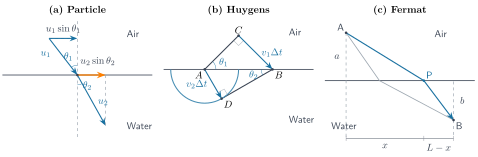
Newton’s corpuscular theory. In this model, light consists of corpuscles of constant mass, and the interface exerts a force on them only in the normal direction. Conservation of momentum parallel to the interface then determines the bending. As shown in Fig. 2(a), let the corpuscle’s speeds in air and water be u_1 and u_2; their velocity components parallel to the interface are u_1\sin\theta_1 and u_2\sin\theta_2. The interface force leaves these two horizontal arrows unchanged in length. For a corpuscle of mass m,
m u_1\sin\theta_1=m u_2\sin\theta_2,\qquad K=\frac{u_2}{u_1}.On entering water from air, observation gives \theta_2<\theta_1, and hence K>1. The equation therefore requires u_2>u_1: this model predicts that light travels faster in water[5, §3.5].
Huygens’s wave explanation. Huygens assumed that light propagates as a wave and that every point on a wavefront emits a secondary wavelet. After a period of time, the envelope tangent to all these secondary wavelets forms a new wavefront. In these isotropic media, the direction of propagation is perpendicular to the wavefront. Fig. 2(b) can be constructed in the following order.
First select two points A and B on the water surface: the incident plane wavefront reaches A first, then sweeps along the surface to B. Let the time between these two arrivals be \Delta t; it is determined by the direction of the incident wave, the wave speed in air, and the length AB, and cannot be chosen independently. Let the wave speeds in air and water be v_1 and v_2. Measuring from the moment the wavefront has just reached A, after \Delta t the wavelet emitted into the water from A has expanded to a radius v_2\Delta t. Therefore, first draw in the water an arc centered at A with this radius.
At this moment the incident wavefront has just reached B, and B has only just begun to emit a wavelet. Draw a tangent from B to the arc in the water and call the point of tangency D; then AD=v_2\Delta t, and AD\perp BD. The wavelets emitted by the points between A and B have travel times between 0 and \Delta t, and they are also tangent to this line; therefore BD is the refracted wavefront at this moment.
Next, from B measure off a distance v_1\Delta t backward along the propagation direction of the incident light, to find the starting point C in air. The wave starting from C reaches B after exactly the same interval, so at the initial moment C and A lie on the same wavefront, and the line AC is the original incident wavefront. Thus CB=v_1\Delta t, and AC\perp CB.
At this point, both right triangles are fully determined: ACB has a right angle at C and ADB has a right angle at the point of tangency D, and they share the hypotenuse AB. The angle between the incident wavefront AC and the water surface equals the angle between the incident direction and the normal, \theta_1; the angle between the refracted wavefront BD and the water surface is likewise \theta_2. Writing out the sines separately and dividing eliminates both AB and \Delta t:
\begin{aligned} \sin\theta_1&=\frac{CB}{AB},\qquad \sin\theta_2=\frac{AD}{AB},\\[6pt] K&=\frac{CB}{AD}=\frac{v_1\Delta t}{v_2\Delta t}=\frac{v_1}{v_2}. \end{aligned}Again, \theta_2<\theta_1 for light entering water from air, so K>1 and therefore v_2<v_1. The wave explanation predicts that light travels more slowly in water, contrary to the corpuscular model above[5, §§2.3, 3.5].
Fermat’s principle. Fermat explained light paths in terms of least travel time. More generally, Fermat’s principle states that the travel time between fixed endpoints is stationary: its first-order change vanishes under small variations of the path. In the present geometry—a plane interface between uniform, nondispersive media—the stationary path is the unique minimum. Varying the point where light crosses the interface and minimizing the total time therefore gives the direction of refraction. In Fig. 2(c), take the interface to be y=0, and fix the starting point in air at A=(0,a) and the endpoint in water at B=(L,-b), where a,b,L>0 are given lengths. Choose any point P=(x,0) on the interface and join A to P and P to B to obtain a candidate path. Because each medium is uniform, light travels in a straight line within it. Thus, with the endpoints fixed, choosing P specifies the entire broken-line path. Since P can move only along the interface, its horizontal coordinate x is the path’s sole variable; it has not been fixed in advance. The gray broken line shows the path obtained by choosing a different crossing point.
Let the speeds in air and water be the given values v_1 and v_2. Dividing each segment’s length by its speed gives the total travel time T(x) as a function of the crossing point; differentiating with respect to x and setting the result to zero gives
\begin{aligned} T(x)&=\frac{\sqrt{x^2+a^2}}{v_1}+\frac{\sqrt{(L-x)^2+b^2}}{v_2},\\[6pt] \frac{\mathrm dT}{\mathrm dx}&=\frac{x}{v_1\sqrt{x^2+a^2}}-\frac{L-x}{v_2\sqrt{(L-x)^2+b^2}}=0. \end{aligned}From the two right triangles, \sin\theta_1=x/\sqrt{x^2+a^2} and \sin\theta_2=(L-x)/\sqrt{(L-x)^2+b^2}. Substitution gives
\frac{\sin\theta_1}{v_1}=\frac{\sin\theta_2}{v_2},\qquad K=\frac{v_1}{v_2}.Since K>1 for light entering water from air, this also requires v_2<v_1. Fermat’s principle therefore gives the same speed relation as Huygens’s construction, but it starts from travel time rather than wavelets[5, §2.1]. In this example, T''(x)>0, while T'(0)<0 and T'(L)>0, so the stationary point is indeed the unique minimum in the interval.
All three derivations give the same angular law, yet they predict different predictions for the relative speeds of light in air and water. The corpuscular model requires light to travel faster in water, whereas Huygens’s wavefront construction and Fermat’s principle require it to travel more slowly. At the time, no comparison of the speed of light in air and water was available to settle this disagreement[5, §§2.3, 3.5].
The refraction discussion so far has kept the color fixed. But when white sunlight passes through a prism, an extended band of colors appears on a screen: refraction changes not only the direction of light but also where each color appears. Does the prism create these colors, or are they already components of white light? Newton tested these alternatives by refracting a selected part of the spectrum again and then bringing the separated colors back together [9, ch. 9, §4].
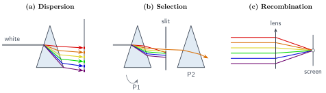
- Separation into colors. Sunlight passes through a narrow aperture and the first prism onto a screen, where an elongated band appears. The colors fall at different positions, showing how the prism spreads white light into a spectrum.
Selecting a color and refracting it again.
- A screen with a narrow aperture is placed in front of the spectrum to select a narrow band and send it through a second prism. After refraction, it remains a narrow beam rather than spreading into the full spectrum again.
- Keep the selection aperture and second prism P_2 fixed, and rotate the first prism P_1 so that different color bands pass through the same aperture in turn. The red end is deviated less and the violet end more, showing that the different bands have different refractive properties.
- Recombination. Bring the separated colors back together to obtain white light, complementing the separation experiment.
These experiments show that white light consists of color components with different refractive properties.
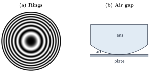
A prism separates the colors in white light, but even light of a single color can produce a new pattern when reflected from a thin film: alternating bright and dark concentric rings, known as Newton’s rings, as simulated in Fig. 4(a). As shown in Fig. 4(b), placing the convex surface of a plano-convex lens on a flat glass plate creates an air gap that thickens outward from the point of contact. Under monochromatic illumination, concentric bright and dark rings appear in the reflected light[5, §3.5].
As the air gap thickens continuously, the reflected light repeatedly grows brighter and dimmer. What theory could explain this periodic pattern and relate the ring positions to the color of light and the film thickness?
A thin film produces alternating brightness and darkness in light of a single color, while a crystal can split light of that same color into two beams. As shown in Fig. 5(a), looking through a piece of calcite at printed text reveals two displaced images; this birefringence occurs even with monochromatic light. Erasmus Bartholin reported the phenomenon in 1669, and Huygens later used a wavefront construction to explain the directions in which the two beams refract. Adding a second crystal, however, raises a question that this explanation did not resolve[5, §2.3].
Send monochromatic light through the first calcite crystal, block one of the two emerging beams, and allow the other to enter a second crystal. Fig. 5(b) compares what happens to this same beam for two orientations of the second crystal. Keeping the incident direction fixed, rotate the second crystal about the beam’s direction of propagation. At certain relative orientations, only one spot appears on the screen; at most other orientations, two spots appear. Whether the beam emerging from the first crystal splits again in the second therefore depends on the crystals’ relative orientation[5, §2.3].
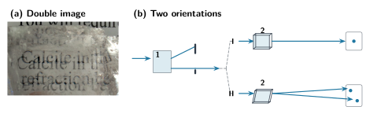
Huygens’s theory can determine the two directions of refraction in a single crystal, but it does not explain why the second crystal produces this orientation-dependent outcome. To account for the experiment, one must describe what property light acquires on passing through the first crystal and how that property affects its subsequent propagation. This orientation-dependent property later became part of the study of polarization[5, §2.3].
These explanatory difficulties are not confined to thin films and crystals. Even when light passes only through a small aperture or around an obstacle, fringes appear near the edge of the shadow instead of the sharp boundary predicted by simple ray paths. This phenomenon is called diffraction. In a posthumously published work from 1665, Francesco Maria Grimaldi reported that sunlight passing through an aperture to illuminate a narrow object produced colored bright and dark bands at the edge of its shadow on a distant screen, as well as fringes within the geometrical shadow. He also compared this effect with ripples in water flowing around an obstacle[5, §2.2].
Fig. 6 shows a modern example: after laser light passes through a slit, a bright central fringe and alternating bright and dark fringes appear on the screen to either side. A theory must further explain how the shape and size of an aperture or obstacle determine the positions of these bright and dark regions.
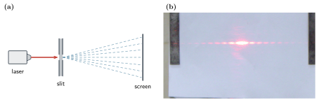
A theory of the nature of light must therefore do more than give the correct directions of reflection and refraction; it must also explain these experiments. Why is light enhanced at some positions and weakened at others? Why does its behavior after passing through a crystal become sensitive to orientation? The corpuscular and wave explanations of the same refracted ray must now face a broader range of tests. We begin with the changes in brightness and ask what happens when two portions of light arrive at the same point[5, §§2.2–2.3, 3.5].
3. The Establishment of Wave Optics: The Early Nineteenth Century
The bright and dark bands of thin films seen in the previous section gave Thomas Young a clue: the reflected light comes from the two interfaces of the film, and the part returning from the second interface travels an extra distance, so the two parts acquire a relative time delay. Young realized that this time difference might determine how strong they are after they meet, and he connected it with beats in acoustics—when two tones of nearly equal pitch are superposed, the sound grows alternately loud and faint. From this he wrote down a “universal law”: when two parts of the same beam of light reach the eye by different paths along the same or nearly the same direction, the appearance and disappearance of a color depend on the difference in path length; in the same medium, when the path difference is an integer multiple of a certain length, the same color reappears [5, §5.1].
Described in the language of waves, a harmonic disturbance propagating in the +x direction can be written as
Here \psi denotes the magnitude of the disturbance, A is the amplitude, and \phi is the initial phase; k=2\pi/\lambda is the wave number, \lambda is the wavelength, \omega=2\pi\nu is the angular frequency, and \nu is the frequency. At a fixed position, -kx+\phi is a constant that can be denoted by \alpha, so the phase becomes \omega t+\alpha and the disturbance repeats every period T=1/\nu; viewed at a fixed instant, the waveform repeats every wavelength \lambda, and the propagation speed is v=\lambda\nu. As the blue curve in Fig. 7 shows, the disturbance varies periodically between -A and A; the horizontal axis \chi denotes the phase of the vibration [6, §§2.1–2.2].
If two waves of the same frequency and the same direction of vibration are present together, their disturbances add at every point. Take first the case in which both have amplitude A; at an observation point write the phase of the first wave as \chi=\omega t+\alpha_1 and let the second lag behind it by \delta=\alpha_1-\alpha_2. Then
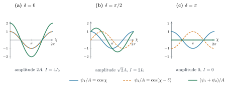
The last step used the sum-to-product formula for cosines. The frequency is unchanged after superposition, and the amplitude is 2A|\cos(\delta/2)|. Consider three cases:
In phase: \delta=0. The two waves reach their crests at the same time and their troughs at the same time. Substituting gives
\psi=A\cos\chi+A\cos\chi=2A\cos\chi.The resultant amplitude is 2A, twice that of a single wave, which is called constructive interference. As Fig. 7(a) shows, the blue and orange curves coincide, and the crests and troughs of the green resultant vibration are both doubled.
A quarter-period out of phase: \delta=\pi/2. When one wave reaches its maximum, the other passes through zero. Substituting gives
\psi=A\cos\chi+A\sin\chi=\sqrt2A\cos\!\left(\chi-\frac{\pi}{4}\right).The resultant amplitude is \sqrt2A, smaller than the 2A at perfect phase agreement. As Fig. 7(b) shows, the crests of the two waves are offset, and the crest of the resultant vibration lies between them.
In antiphase: \delta=\pi. The crest of one wave coincides with the trough of the other, and at any instant the two are equal in magnitude and opposite in sign. Substituting gives
\psi=A\cos\chi+A\cos(\chi-\pi)=A\cos\chi-A\cos\chi=0.The two waves cancel completely, which is called destructive interference. As Fig. 7(c) shows, the green resultant vibration is a line at zero.
A screen or the eye records the average light intensity over many periods, not the instantaneous disturbance. The intensity is proportional to the time average of the square of the disturbance, written as I=C\langle\psi^2\rangle_t, where C>0 is a proportionality constant. The time average here means integrating the square of the disturbance over one period and then dividing by the period T=2\pi/\omega. For any time-independent phase \alpha, using \cos^2 u=(1+\cos 2u)/2, one has
The last step used 2\omega T=4\pi, so the two sine values are equal. First compute the single wave: substituting \psi_1=A\cos\chi into the definition of intensity, the amplitude A does not vary with time and can be moved outside the averaging sign, giving
Now compute the intensity after the two waves are superposed. Substitute the full resultant vibration found above; since the phase difference \delta is fixed, 2A\cos(\delta/2) can also be moved outside the averaging sign:
The second-to-last step again used the average value of the cosine squared, 1/2; the last step used CA^2=2I_0.
Substituting the three phase differences of Fig. 7 gives 4I_0, 2I_0, and 0, respectively: in phase the amplitude is doubled and the intensity becomes four times as large; a quarter-period out of phase the intensity equals the sum of the two individual intensities; in antiphase the intensity is zero.
If the two waves have different amplitudes, one still first adds them, then squares, and finally averages. Let the amplitudes A_1,A_2 both be non-negative, with the same frequency and a fixed phase difference \delta=\alpha_1-\alpha_2:
When squaring, besides the squares of the individual terms there is also a cross term:
The first two terms already use the average of the cosine squared computed just above. The cross term is expanded with the product-to-sum formula:
The first term inside the brackets is constant and is unchanged by averaging; the second term oscillates in time, and its average is
Therefore \langle\psi_1\psi_2\rangle_t=(A_1A_2/2)\cos\delta. Substituting back into the mean square and multiplying by C gives the intensity:
The intensities when the two waves illuminate separately are I_1=CA_1^2/2 and I_2=CA_2^2/2, respectively, so
The result can thus be written entirely in terms of intensities:
The first two terms are the intensities of the two waves individually, and the third is the interference term: it is positive in phase and negative in antiphase. Hence the minimum intensity in antiphase is (\sqrt{I_1}-\sqrt{I_2})^2, and complete cancellation occurs only when the two intensities are equal [6, §§2.4, 9.1].
This phenomenon can be shown with a simple experiment: let a single beam of light pass through two very close small holes and place a screen behind them; where the two parts of the light overlap, bright and dark fringes appear. Young first let sunlight pass through a small hole and used it as a source to illuminate the two holes behind it; this upstream pinhole keeps the vibrations at the two holes in a stable phase relation. Today slits are usually used instead of small holes, so that more light is transmitted. In the calculation, monochromatic light is taken and the source is placed at equal distances from the two slits, so that the light at the two slits is in phase [6, §9.3.1].
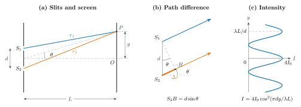
Let the centers of the two slits be separated by d, the distance to the screen be L, and a point P on the screen be a distance y from the central point O; the distances from the two slits to P are r_1 and r_2 (Fig. 8). The light at the two slits is in phase, so the phase difference at P comes only from the path difference \Delta r=r_2-r_1: an extra wavelength of travel means a lag of one period, and an extra travel \Delta r corresponds to a phase difference \delta=2\pi\Delta r/\lambda. Here \theta is the angle between the direction from the midpoint of the two slits to P and the central axis, and in Fig. 8(a) \tan\theta=y/L. When L\gg d, the two paths are nearly parallel and can be drawn enlarged as in Fig. 8(b): drop a perpendicular from S_1 to the lower light path, with foot B. The distances from S_1 and from B to the distant P are approximately equal, so the extra distance traveled by the second beam is S_2B. In the right triangle S_1S_2B, the hypotenuse S_1S_2=d and the angle at S_1 is also \theta, so S_2B=d\sin\theta. With the additional small-angle approximation |y|\ll L, \sin\theta\simeq\tan\theta=y/L, and hence
In the central region of the screen, if the intensity when each slit illuminates separately is approximately a constant I_0, substituting into the equal-amplitude formula gives
At a bright fringe the two waves are in phase, and at a dark fringe they are in antiphase, therefore
Here m is an integer. The point P in Fig. 8 lies exactly on the bright fringe with m=1, and the intensity distribution obtained from this formula is drawn on the right. [6, §9.3.1]
The double slit splits the light into two parts by two apertures, whereas a thin film does this by reflection at two interfaces. Returning to Newton’s rings from the previous section, consider a plano-convex lens with its convex surface resting gently on a flat glass plate. An air film between them thickens gradually from the center outward. Illuminated with nearly perpendicular monochromatic light, concentric bright and dark rings are seen in the reflected light.
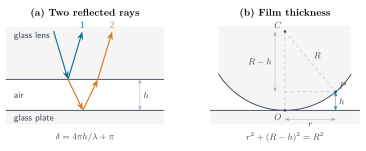
As Fig. 9(a) shows, the first part of the light is reflected at the glass–air interface on the lower surface of the lens; the second part enters the air film and returns after reflection at the air–glass interface below. Let the local film thickness be h; the second part makes one extra round trip inside the film, traveling about 2h more at near-perpendicular incidence. Taking \lambda to denote the wavelength of light in air, the phase difference due to propagation is 4\pi h/\lambda.
First consider only the phase difference due to propagation. Taking the amplitudes of the two reflected beams to be approximately equal, each with intensity I_0, and substituting into the interference formula above gives
This result already gives alternating bright and dark bands as the film thickness changes, but it fails at the center: at the ideal point of contact h=0, the formula gives I_{\rm path}(0)=4I_0, so the center should be brightest; what the experiment shows is a dark spot at the center. Looking back at Fig. 4(a), the simulation of the reflected rings also has a dark spot at its exact center, with the first bright ring outside it. Merely counting how much farther the second beam travels cannot explain this observation.
If the reflections at the two interfaces make the two beams differ by an extra half period, the result changes. Half a period corresponds to an additional relative phase shift of \pi, which is phase-equivalent to an additional path difference of \lambda/2, not an extra distance actually traveled by the light. Adding it to the phase difference due to propagation gives
Substituting back into the intensity formula:
Now I(0)=0 when h=0, so the center becomes dark. Moving outward, the film thickness increases, and the sine squared varies periodically between zero and one; hence the bright and dark conditions are
With this relative half-period difference added, the central dark spot and the positions of the bright and dark bands as the film thickness changes agree with observation [6, §9.4]. In 1802, when discussing the central dark spot in light reflected from a thin bubble, Young proposed on the basis of just such phenomena that light should be delayed by an extra half wavelength when reflected from a boundary to a medium of higher refractive index. He also tested another prediction of this rule: when a liquid whose refractive index lies between those of the plate and the lens is introduced between a flat plate and a convex lens of different refractive indices, the central spot becomes bright [5, §5.1].
This correction explains the central dark spot but leaves a new question: why does reflection make the two beams differ by an extra half period? From the propagation and superposition of waves alone, one cannot determine the phase change that occurs at the interface; this requires a further account of the interaction between light and the medium, to be discussed later.
Why are the fringes circular rings, and why are they denser farther out? As Fig. 9(b) shows, the lower surface of the lens is a spherical surface of radius R, and positions at the same distance r from the contact point have the same film thickness and therefore the same intensity. From the geometry formed by the center of the sphere, the contact point, and a point on the spherical surface,
Substituting the film thickness into the bright and dark conditions gives the radii of the rings:
Here r_m is the distance from the central contact point to the m-th dark ring, and r_{m+1} is the radius of the next outer dark ring; r_0=0 corresponds to the central dark spot. The capital R is the radius of curvature of the spherical surface of the lens, which is fixed for a given lens. The radial spacing between two adjacent dark rings is \Delta r_m=r_{m+1}-r_m. From the dark-ring formula,
Counting outward, both r_m and r_{m+1} increase, so the denominator increases while the numerator \lambda R is unchanged; hence the spacing \Delta r_m gradually decreases.
For example, taking wavelength \lambda=500\,\mathrm{nm} and lens radius of curvature R=2\,\mathrm m, then
The radii and spacings of the first, second, and third dark rings are, respectively,
Therefore the second and third dark rings are closer together than the first and second. Why the center is dark is explained by the relative \pi phase shift on reflection; why the fringes are circular is explained by the film thickness being the same at equal radii; and why the outer fringes are denser is explained by the spacing formula above. If white light is used instead, then for a bright ring of the same order (r_m^{\rm bright})^2=(m+\tfrac12)\lambda R, and different wavelengths are enhanced at different positions, so the rings appear colored [6, §9.4].
The bright and dark bands from the double slit and from thin films come from the superposition of two portions of light. But the previous section also showed that bright and dark fringes appear on the screen even when light passes through only a single slit. With no second slit, which portions of light cancel each other? Huygens regarded every point of a wavefront as a place that emits secondary waves; Fresnel went further and included the phase of these secondary waves at the observation point in the superposition. In this way, different parts of the same slit can also reinforce or cancel one another[5, §5.3].
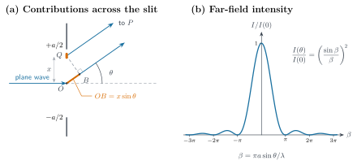
Consider the arrangement in Fig. 10(a): a monochromatic plane wave normally illuminates a long slit of width a, and observation is made on a distant screen. Take the coordinate x along the slit width, with the slit center at x=0 and the two edges at x=\pm a/2. Let the direction of the observation point P make an angle \theta with the central axis, and let the distance from the slit center to P be r_0. Since the screen is far enough away, the directions from all parts of the slit toward P are nearly parallel, and the same projection method as for the double slit can be used. In Fig. 10(a), O is the slit center and Q is a narrow segment of the slit at coordinate x>0. Drop a perpendicular from Q to the central light path, meeting it at B; the paths from Q and from B to the distant P are approximately equal. Light starting from O therefore travels an extra orange segment OB compared with light starting from Q. In the right triangle OQB, OQ=x and \angle QOB=\pi/2-\theta, so OB=x\cos(\pi/2-\theta)=x\sin\theta. Hence the optical path at Q is shorter than that at the center by about x\sin\theta, that is,
The incident light is in phase across the whole slit, but after propagation to P the phases of the small segments are no longer the same. Divide the slit into many small segments of width \mathrm dx, and let the amplitude contributed to P per unit slit width be b. Under uniform illumination and in the paraxial far-field regime, b may be taken as approximately constant, so the contribution of one small segment is
Here k=2\pi/\lambda. Setting \chi=\omega t-kr_0, add the contributions from the whole slit; as the segments become infinitely narrow, the sum becomes an integral:
In the integration, neither \chi nor \theta varies with x. When \sin\theta\ne0, the antiderivative of the cosine is a sine divided by the coefficient k\sin\theta of x in the phase, so
To simplify the notation, define \beta=ka\sin\theta/2=\pi a\sin\theta/\lambda, which is half the phase difference between the two ends of the slit. Using \sin(\chi+\beta)-\sin(\chi-\beta)=2\cos\chi\sin\beta gives
On axis, \theta=0, the optical paths are equal everywhere, and setting \theta=0 directly in the original integral gives \psi=ba\cos\chi, with resultant amplitude ba. Away from the axis, vibrations at different positions can no longer add fully in phase, and the resultant amplitude becomes ba|\sin\beta/\beta|. As before, average the square of the disturbance over time:
Fig. 10(b) shows this intensity distribution. A dark fringe requires the resultant amplitude to vanish, that is, \sin\beta=0 with \beta\ne0, so
m=0 does not count as a dark fringe, because \sin\beta/\beta tends to 1 as \beta\to0. The central bright fringe lies between the first dark fringes on either side; when a\gg\lambda, the small-angle approximation gives \theta_{\pm1}\simeq\pm\lambda/a, so the angular width of the central bright fringe is
The narrower the slit, the farther the first dark fringe lies from the central axis and the wider the central bright fringe—the trend of light spreading to both sides in the slit experiment[6, §10.2.1].
The key approximation above is r(x)\simeq r_0-x\sin\theta. The exact distance and its expansion are
Although the omitted quadratic term is a very short distance, once multiplied by the wave number k it can still produce a noticeable phase change. To use the result above, the phase error it produces across the entire slit width must therefore be much less than 1:
In the paraxial region, r_0\simeq L, and this far-field condition is usually written L\gg a^2/\lambda; the resulting pattern is called Fraunhofer diffraction, and a lens may also be used to observe such a pattern in its focal plane. If the screen is closer, the quadratic phase cannot be neglected, and the pattern lies in the Fresnel diffraction regime, requiring that term to be retained in the calculation[6, §§10.1.2, 10.2.1].
Above, \psi was used to denote the magnitude of the vibration, and we calculated how two portions of light reinforce or cancel. But a vibration can have a direction as well as a magnitude. First distinguish two directions: the direction of propagation is the direction in which the waveform advances, while the direction of vibration describes, at a fixed position, the direction along which the light's disturbance oscillates back and forth. For a transverse wave, the direction of vibration is perpendicular to the direction of propagation.
For example, let light propagate along +z, and choose mutually perpendicular x and y axes in the plane perpendicular to z. The disturbance of one beam may oscillate only along x, and that of another only along y; the two beams may have the same frequency, wavelength, and intensity and may travel in the same direction, yet have different directions of vibration. If at a fixed position the vibration of a beam always lies along the same straight line, then even though the sign of the vibration changes with time, the direction of that line remains fixed; such light is called linearly polarized light. Polarization describes this direction of vibration and how it changes with time; here we first discuss linear polarization with a fixed direction[6, §§8.1–8.2].
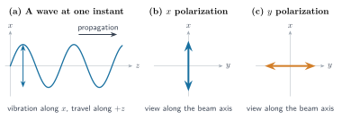
These two linear polarizations can be written respectively as
The cosine describes the magnitude and sign of the vibration, while the unit vectors \hat{\mathbf x} and \hat{\mathbf y} specify the line on which the vibration lies. The light in Fig. 11(b) vibrates along x, so its component along y is zero; Fig. 11(c) is the reverse. A vibration may also lie along an oblique direction between the two axes, in which case it has components along both x and y. These two directions are a set of coordinates for describing the vibration; this does not mean that every beam simultaneously contains two independent vibrations.
Now return to the experiment of Fig. 5(b). The first calcite crystal splits the light into two beams, and a mask selects one of them, yielding linearly polarized light with a fixed direction of vibration. The second crystal resolves the incident vibration along the two orthogonal polarization directions it permits and sends the two components out along different paths. Rotating the second crystal means rotating these two orthogonal polarization directions: the direction of vibration of the incident light is unchanged, but its projections onto the two directions change, so the brightnesses of the two spots also change[5, §§2.3, 5.3; 6, §8.4].
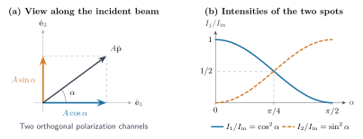
First neglect surface reflection and absorption and treat the second crystal as an idealized lossless two-way beam splitter. Viewed along the incident beam, Fig. 12(a) marks its two orthogonal polarization directions \hat{\mathbf e}_1 and \hat{\mathbf e}_2. If the direction of the incident vibration \hat{\mathbf p} makes an angle \alpha with \hat{\mathbf e}_1, the unit direction vector can be resolved as
Let the incident vibration be \boldsymbol\psi=A\hat{\mathbf p}\cos\chi, where A is the amplitude and \chi is the time-varying phase. Substituting this decomposition gives
Thus the amplitude coefficients of the two channels are A\cos\alpha and A\sin\alpha, i.e., the first-path component and the second-path component labeled in the formula above. The crystal sends the two components along separate paths, forming two spots at different positions on the screen. Using \langle\cos^2\chi\rangle_t=1/2 obtained earlier, compute the intensities separately:
Here I_{\rm in} is the intensity entering the second crystal, and I_1,I_2 are the intensities of the two emerging beams. Their sum is I_{\rm in}(\cos^2\alpha+\sin^2\alpha)=I_{\rm in}; rotating the crystal changes only how the light is divided between the two paths. In treating birefringence and polarization interference, Fresnel used precisely this cosine-and-sine amplitude resolution to calculate intensities[5, §5.3; 6, §8.4].
- \alpha=0: the incident vibration is along the first polarization direction. Here I_1=I_{\rm in} and I_2=0, so only the first-path spot appears on the screen. Rotating to \alpha=\pi/2 gives I_1=0 and I_2=I_{\rm in}, leaving only the second-path spot.
- \alpha=\pi/4: the incident vibration makes 45^\circ with each of the two directions. Since \cos^2(\pi/4)=\sin^2(\pi/4)=1/2, we have I_1=I_2=I_{\rm in}/2, so the two spots are equally bright.
- Other orientations. Neither projection is zero, so two spots appear on the screen, with their brightnesses varying continuously with the angle. This explains the change from one spot to two in Fig. 5(b); when only one spot appears, the other output has zero intensity because the incident vibration has no component along that direction.
This direction model also explains the connection between polarization and interference. Fresnel and Arago found that two beams with a stable phase relation do not show the usual interference fringes even when they reach the same position, if their polarization directions are mutually perpendicular; after they are projected onto a common analyzer axis, the fringes reappear[5, §5.3]. In the vector description of vibration the reason is straightforward: let the vibrations of the two beams be \boldsymbol\psi_1=\hat{\mathbf e}_1\psi_1 and \boldsymbol\psi_2=\hat{\mathbf e}_2\psi_2, where \psi_1,\psi_2 are their respective signed vibration magnitudes; then
When they are mutually perpendicular, the interference term already vanishes before time averaging, leaving an intensity of only I_1+I_2. If the vibrations are projected onto a common direction that is not perpendicular to either, the two projected components can add and the interference term reappears. The orientation effect of the two crystals and these polarization-interference phenomena together drove the interpretation that light vibrates transversely: in the plane perpendicular to propagation, the vibration can have different directions; if the vibration were only along the direction of propagation, no such freedom would exist[5, §5.3].
At this point the success of the wave theory lay not only in calling light a wave. The same superposition rules gave the positions of the double-slit fringes, the relation between the brightness of a thin film and its thickness, and the width of the central bright fringe of a single slit; incorporating the direction of vibration then explained the orientation dependence in the two-crystal experiment and the non-interference of orthogonally polarized light. Yet once the phase, amplitude, and direction could all be calculated, a physical question remained: what exactly is vibrating? At the time, familiar waves such as sound waves and water waves all had a medium that carried the vibration, and light could pass through evacuated space, so people imagined that space was still filled with a medium different from air—the ether[6, §1.4].
Polarization made the requirements on the ether even more demanding. Transmitting a transverse vibration requires a medium that develops a restoring force after a shear deformation, whereas an ordinary fluid cannot maintain such a deformation as an elastic solid does. The ether had to transmit transverse waves while allowing celestial bodies to move through it without noticeable obstruction. Fresnel tried to make it behave elastically for small vibrations and approximately like a fluid for larger displacements; this could reproduce some of the known optical laws but did not yield a satisfactory mechanical explanation[5, §5.3].
The wave theory explained how light superposes and how it vibrates, but it still did not say what medium carries these vibrations. In 1845, Faraday discovered that a magnetic field can change the polarization direction of light, providing an experimental clue to a connection between light and electricity and magnetism[5, §6.2].
References
- Wikipedia contributors, “Qijia culture”, Wikipedia, accessed 5 October 2026.
- Gary Todd, “Bronze Mirror”, photograph, 1 September 2011, Wikimedia Commons, CC0 1.0, accessed 5 October 2026.
- Mozi, “Explanations of the Canons, Part II” (《经说下》), Wikisource, Chinese text, accessed 5 October 2026.
- Wikipedia contributors, “Camera obscura”, Wikipedia, accessed 5 October 2026.
- O. Darrigol, A History of Optics: From Greek Antiquity to the Nineteenth Century (Oxford University Press, Oxford, 2012).
- E. Hecht, Optics, 5th ed., Global ed. (Pearson, 2017).
- National Eye Institute, “How the Eyes Work”, updated 20 April 2022, accessed 5 October 2026.
- Xunzi, “Encouraging Learning” (《劝学篇》), Wikisource, Chinese text, accessed 5 October 2026.
- A. M. Smith, From Sight to Light: The Passage from Ancient to Modern Optics (University of Chicago Press, Chicago, 2015).
- Furrfu, “3310.calcite (Iceland Spar) birefringence”, photograph, 6 March 2010, Wikimedia Commons, public domain, accessed 5 October 2026.
- Luiz Sauerbronn (Wikimedia Commons username: Luiz.Sauerbronn), “Fresnel Diffraction experiment DSC04554”, photograph, 20 June 2008, Wikimedia Commons, public domain, accessed 5 October 2026.
.jpg){kind=link}
_birefringence.jpg){kind=link}